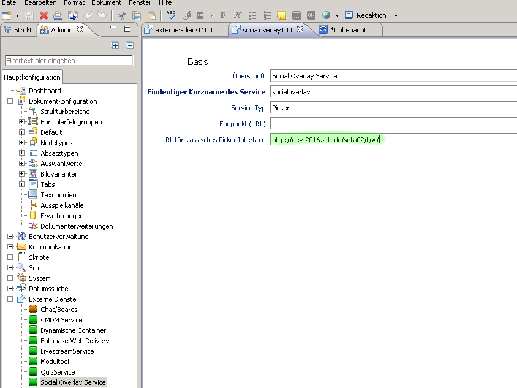

P12 Editor
Sophora Administration

<!doctype html>
<html class="no-js" lang="">
<head>
<meta name="viewport" content="width=device-width, initial-scale=1">
<script src="https://code.jquery.com/jquery-2.2.0.min.js"></script>
</head>
<body style="background:black; height:500px; padding-top: 5px;">
<div class="text-center">
<button type="button" id="myButton" data-loading-text="Saving... Please wait."
class="btn btn-primary" autocomplete="off" disabled>Save</button>
</div>
<div id="memes">
</div>
<script src="js/main.js"></script>
</body>
</html>
<!doctype html>
<html class="no-js" lang="">
<head>
<meta name="viewport" content="width=device-width, initial-scale=1">
<script src="https://code.jquery.com/jquery-2.2.0.min.js"></script>
</head>
<body style="background:black; height:500px; padding-top: 5px;">
<div class="text-center">
<button type="button" id="myButton" data-loading-text="Saving... Please wait."
class="btn btn-primary" autocomplete="off" disabled>Save</button>
</div>
<div id="memes">
</div>
<script src="js/main.js"></script>
<script src="//static.zdf.de/libs/js/.../pickerResultInterface.min.js"></script>
</body>
</html>
/**
* Call Picker.sendResult
*/
function save(meme, $btn){
var fragments = [{
"fragmentURI": "http://int.zdf.de/"+ meme.id +"/fragment.html",
"playout": "web"
}, {
"fragmentURI": "http://int.zdf.de/"+ meme.id +"/fragment.xml",
"playout": "xml"
}],
content = {
"id" : false, //generate new
"description" : "Beschreibungstext1",
"visibleFrom" : "2016-03-21T00:00:00+01:00",
"visibleTo" : "2016-11-24T00:00:00+01:00",
"fragments" : fragments
},
res = {
content: [content]
}
PickerResultInterface.sendResult(res);
}
function IPickerResult() {
if (location.search.match(/targetOrigin=([^&]+)/) !== null) {
targetOrigin = unescape(location.search.match(/targetOrigin=([^&]+)/)[1]);
console.re.log('targetOrigin:', targetOrigin);
}
if (targetOrigin === "") {
console.re.log("Parameter targetOrigin is not defined!");
throw new PickerResultException("Parameter targetOrigin is not defined!");
}
targetOrigin == "https://int.zdf.de"
query = window.location.search.substring(1);
vars = query.split("&");
getvars = {};
for (i = 0; i < vars.length; i += 1) {
pair = vars[i].split("=");
getvars[pair[0]] = pair[1];
}
getvars = {
targetOrigin: "https://int.zdf.de",
flex_modul: "flex_0_1",
flex_index: "1",
preview: "false"
}
/**
* Send picker data to host.
* @param {Array} content Array with fragment Objects
* @param {Function|null} Callback function
*/
this.sendResult = function sendResult(result, done) {
var resultString, noPopup = true, retval = null;
if (typeof result === 'undefined') {
console.re.log("Parameter result is null or undefined!");
throw new PickerResultException("Parameter result is null or undefined!");
}
result.getvars = getvars;
// serialize result Object to String
resultString = JSON.stringify(result);
console.re.log(resultString);
{
"content": [{
"id": "8410d919-05a0-4d57-ba12-7df12bac7077",
"description": "Beschreibungstext1",
"visibleFrom": "2016-03-21T00:00:00+01:00",
"visibleTo": "2016-11-24T00:00:00+01:00",
"fragments": [{
"fragmentURI": "http://int.zdf.de/79d648b6d/fragment.html",
"playout": "web"
}, {
"fragmentURI": "http://int.zdf.de/79d648b6d/fragment.xml",
"playout": "xml"
}]
}],
"getvars": {
"targetOrigin":"https://int.zdf.de",
"flex_modul":"flex_0_1",
"flex_index":"1",
"preview":"false"
}
}
if (targetOrigin === 'sophora://picker') {
if (typeof sendResultToDeskClient === 'function') {
// sophora is present
sendResultToDeskClient(resultString);
} else {
// sophora is missing
console.re.log("Page not executed inside Sophora Client.");
throw new PickerResultException("Page not executed inside Sophora Client.");
}
} else {
// send Result to iFrame's parent window (Imperia/P12)
parent.postMessage(resultString, targetOrigin);
}
<script src="http://cm2-prod-pre.zdf.de/studio/pickerResultInterface.js"></script>
<script src="//static.zdf.de/libs/js/pickerResultInterface.min.js"></script>